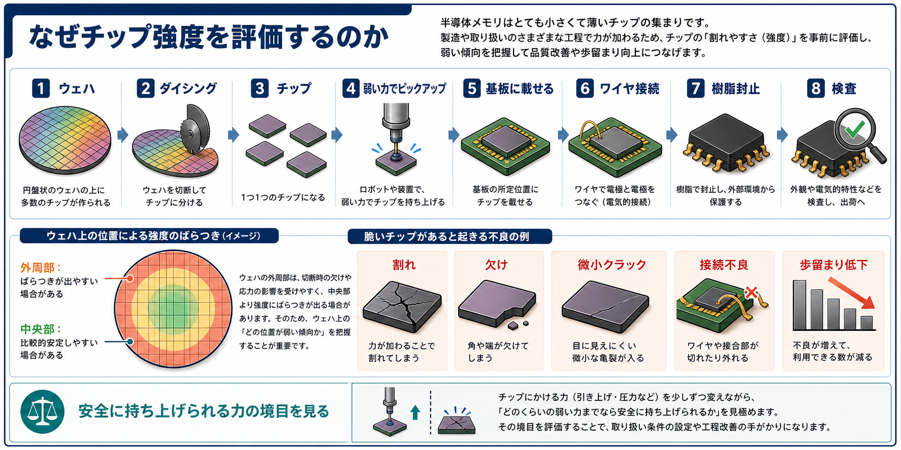
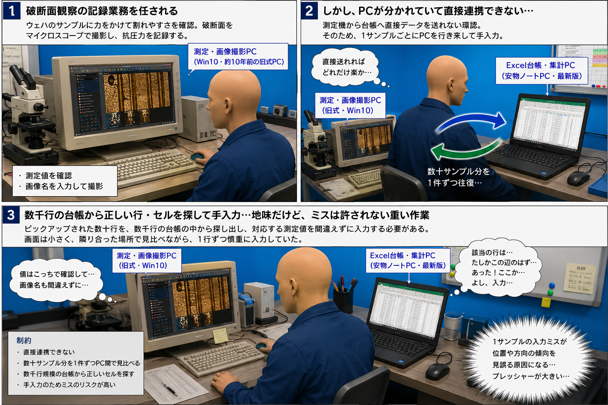
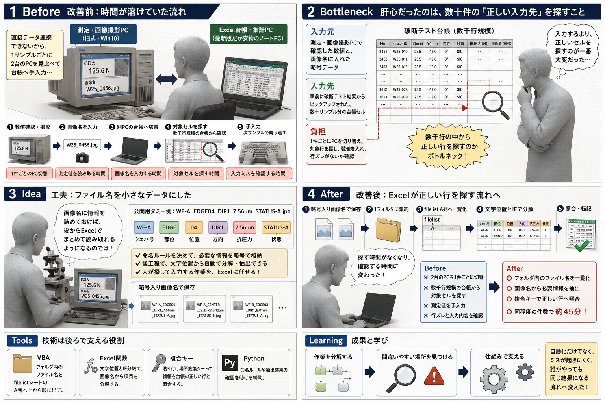

外周部はばらつきが出る場合がある
ウェハ外周部は、切断時の欠けや応力の影響を受けやすく、中央部より強度にばらつきが出る場合があります。
Excel業務改善 / GitHub Portfolio
測定・画像撮影PCと、Excel台帳・集計用PCが分かれ、測定機から直接データ連携できない環境で、半導体メモリの評価記録をファイル名のルール化とExcel照合で見直しました。
Background
PCやスマホに使われる半導体メモリについて、特定条件のウェハで強度の傾向を調べる工程でした。
前職では、PCやスマホなどに使われる半導体メモリの生産評価工程に関わっていました。ここで扱うのは、製品そのものの紹介ではなく、製造条件や材料条件によってチップの強度にどのような傾向が出るかを確認する評価業務です。
半導体メモリは、円盤状のウェハ上に多数の小さなチップを作り、後工程で1つずつ切り出して扱います。チップは薄く小さいため、切断や装置での取り扱いの中で、欠け・割れ・応力の影響を受けることがあります。
Why Evaluate
チップは切り出し後に装置で持ち上げ、基板に載せ、ワイヤで接続して樹脂で封止されます。途中で割れ・欠け・微小クラックがあると、接続不良や歩留まり低下につながる場合があります。

ウェハ外周部は、切断時の欠けや応力の影響を受けやすく、中央部より強度にばらつきが出る場合があります。
どのくらいの弱い力なら安全に持ち上げられるか、その境目を評価して、取り扱い条件の見直しにつなげます。
Assigned Work
評価そのものよりも、測定結果を正しい台帳セルへ移す手順が重い作業でした。
そこで私は、破断面観察の記録業務を任されました。
この評価では、特定条件（材質など）のウェハから取ったサンプルチップに力をかけ、割れやすさを確認します。破断後はサンプルの破断面をマイクロスコープで撮影し、ウェハ上の箇所、破断面の状態、破断時の抗圧力を記録します。
目的は単品の合否を決めることではなく、ウェハの箇所、材料条件、破断面、抗圧力の相関傾向を把握することです。どこに弱い傾向が出るのかを調べることで、品質改善や工程条件の見直しにつながる手がかりを得ます。
ただし現場の流れは単純ではありませんでした。測定器につながった旧型の測定・画像撮影PCと、Excel台帳や集計・発表に使う支給PCが分かれており、データ流出を防ぐためにPC間のやりとりはUSB経由に限られていました。さらに、測定値を別PCの台帳へ直接入力する機能もなく、測定機から台帳へ直接データを送ることができない環境でした。
そのため、1サンプルごとに測定・画像撮影PCで数値を確認し、画像名を入力して撮影した後、別PCのExcel台帳へ同じ数値を手入力する必要がありました。この往復が数十サンプル分続くため、入力そのものだけでなく、確認先を切り替えるたびのロスと集中の途切れが大きな負担になっていました。
さらに、入力先は単純な空欄ではありません。事前に数千行規模の破断テスト台帳からピックアップされた数十行について、正しいセルを探し、対応する測定値を間違えずに入れる必要がありました。つまりExcelの記録ミスは、単なる入力ミスではなく、位置や方向の傾向を見誤る原因にもなり得ます。
Summary
価値があったのは、直接連携できない情報を正しく結びつける負担を減らしたことです。
2台のPCを見比べ、数千行規模の台帳から対象の数十行を目で探していた。
画像名に略号データを入れ、Excelが読める入力元にした。
主な作業が手入力から照合確認へ移り、約45分まで短縮した。


Before
直接データ連携できないため、1サンプルごとに2台のPCを見比べながら台帳へ手入力していました。
Bottleneck
大変だったのは測定値を打つことより、数千行規模の台帳から対応するセルを間違えずに探すことでした。
Idea
画像名に略号データを入れ、後からExcelでまとめて読み取れるようにしました。
After
人が台帳を探す代わりに、画像名から抽出した情報でExcelが照合します。
Result
作業の山場が「探す・入力する」から「結果を確認する」へ移りました。
Tools
技術名よりも、どの負担を減らすために使ったかを大事にしました。
フォルダ内のファイル名をfilelistシートのA列へ上から順に出す。
文字位置とIF分岐で、画像名から項目を分解する。
貼り付け場所変換シートの情報を台帳の正しい行と照合する。
命名ルールや抽出結果の確認を助ける補助。
Learning
自動化だけでなく、ミスが起きにくい流れへ変えました。
GitHub Link
このLPは入口、READMEとサンプルファイルは公開用に一般化した裏付けです。